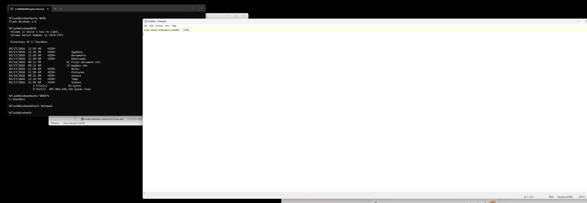

A fast-launching, sandboxed identity environment for Windows.

Download FlashWindows.batFlashWindows starts instantly. Just double-click the FlashWindows.bat file and the environment boots in seconds. No installation, no system changes, and no admin permissions are required.
When FlashWindows starts, it activates a temporary identity, generates a clean user folder, and builds fresh Libraries. Everything happens inside a safe, isolated session that disappears when you close the window.
FlashWindows is a command-line driven environment. Any app you want to run inside FlashWindows must be launched from the FlashWindows command line.
This ensures the app inherits:
If an app is launched from outside FlashWindows, it will not enter the sandbox and will use your real Windows identity instead.
FlashWindows is a temporary alternate identity for Windows. It creates a clean, isolated workspace where programs believe they are running under a different user, on a different machine, and even on a different OS version.
This makes it ideal for testing, experimenting, or running tools without affecting your real Windows account.
FlashWindows uses environment variables to construct a complete identity mask. When the BAT file launches, it sets:
These changes only exist inside the FlashWindows session. When you close the window, everything resets and your real system remains untouched.
FlashWindows exists to give users a clean, disposable environment that feels like a fresh Windows install — without creating new accounts or modifying the real system. It’s perfect for developers, testers, and anyone who wants a cinematic alternate-OS experience.